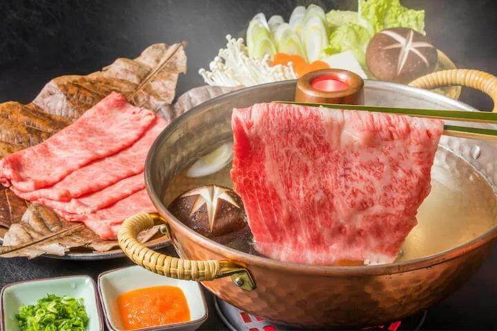

Restaurant List
-

寿司さくら
Review List Register -

La Pallet
Review List Register -

魚料理うみさか
Review List Register -

無敵のハラペコ
Review List Register -
Curry からり
Review List Register -

しゃぶしゃぶ菜園
Review List Register -

和食の風
Review List Register -

ラーメン一番星
Review List Register -

ステーキハウス山田
Review List Register -

中華料理 龍
Review List Register
About
Yusuke Sato
日本大学卒業後、ゴールドマンサックス証券に新卒で入社。
2年目からは会社史上最速で役員に昇格。
主に不動産取引を自身の強みとしており、日本の物件の8割を掌握している。
好きな言葉は「女と子どもはすっこんでろ」
朝の日課は新聞を速読し、ちり紙として使い自宅の庭で燃やして焼き芋を作ること。
言動不一致の社員が大嫌いであり、2024年度は300人をクビにした暴馬社長としても有名。
その才能はとどまることを知らず、来年度からはアイドルプロデュースにも舵を切る。

Company
従業員数はグループを合わせると3,256名(2024年時点)
平均年齢は26歳と若手が中核を担う。
現在は飲食業コンサルティングが中心業務で2025年からは飲食店のプロデュース業も手がける。
採用もどしどし募集してます。